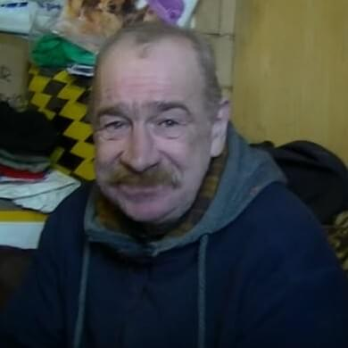

Jan Łoś
(Kanał Youtube - Brak)
Jan Łoś Jan Ł. (bo RODO) ur. 6 czerwca 1970 w Grajewie, zm. 3 sierpnia 2020 w Białymstoku – postać która zajmowała coraz silniejszą pozycję w Uniwersum Szkolnej 17, były kandydat do zastąpienia Majora Suchodolskiego jako partner i niewolnik przewodniczącego, potencjalny dziedzic Szkolnej, za życia był 3 najważniejsza postacią uniwersum po Kononowiczu i Majorze, syn Teresy Korol, brat Wiesława Choińskiego. W latach 2018-2020 minister infrastruktury w Bombasie - autor słynnego projektu lotniska dla karetek psychiatrycznych w Starosielcach.
Wiosna i początek lata 2020 roku były jednocześnie ostatnim etapem nie tylko kariery internetowej Janka ale też całego jego życia. Ten okres charakteryzowały łosiowe lajty, które Łoszyngoł osobiście prowadził. Ich główną cechą była trąbka stadionowa, której dźwiękiem niemiłosiernie irytował Wiesława i Tereskę.
